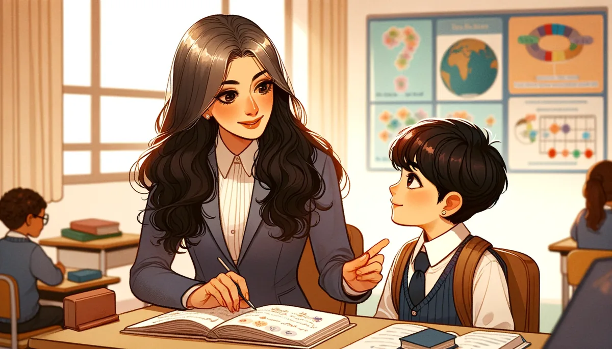
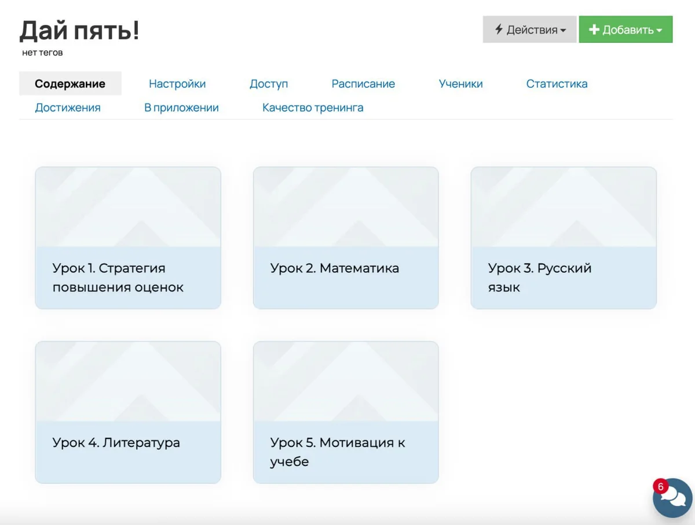

С вашей помощью он быстро ликвидирует пробелы в знаниях и повысит свой средний балл в школе, прокачает память, внимание, сможет дольше концентрироваться на уроках и успешно решать контрольные.
[ 2 ]
Свободное время
У вас появятся десятки вариантов, как решать проблемы с учёбой без криков, а главное быстро и эффективно, сильно сокращая время на восстановление пропущенных знаний.
[ 3 ]
Успешный взрослый
Родители начнут чувствовать себя увереннее с детьми и смогут восстановить тёплые отношения с ребёнком, а специалисты повысят свою репутацию в глазах родителей благодаря быстрым и видимым результатам ребёнка.
Вас раздражает, что ребенок несамостоятельный, невнимательный, постоянно отвлекается, делает глупые ошибки, не усадить за домашку, а потом учит уроки до ночи, а вы при этом должны сидеть в комнате и всё контролировать.
Из-за учёбы часто возникают скандалы, слёзы, истерики, вы чувствуете, что отдаляетесь, отношения портятся.
Вы устали заставлять его учиться, нет больше никаких сил, а фоном ещё изматывают вина и стыд за срывы и крики.
Вам страшно, что из ребёнка вырастет, вечный дискомфорт и напряжённые отношения со школой, учителя недовольны.
Оценивают по оценкам
Ещё лучше я понимаю проблемы специалистов, потому что сталкивалась с этим в своей практике:
Родители оценивают результаты вашей работы по отметкам в школе и разочаровываются, когда опять видят двойку, перестают ходить на занятия.
Ребёнок теряет мотивацию на занятиях, когда оценки в школе не меняются, у него падает самооценка и портятся отношения с учителями и родителями.
Не хватает приёмов, фишечек, более эффективных, чем написано в классических учебниках, чтобы сократить время и быстрее дойти до результата.
Иногда приводят ребёнка с запросом, с которым раньше не работали, и хочется убедиться, что всё делаете правильно.
Пятёрки возможны, даже если вы уже всё перепробовали!
В школе и у специалистов часто подход ко всем один, при этом дети — разные.
На курсе вы сможете вывести индивидуальную стратегию обучения для каждого конкретного ученика. Родители помогут своим детям с пробелами в знаниях без репетиторов, а специалисты смогут превзойти ожидания родителей и повысить свой авторитет и стоимость за занятие.
Сможете заинтересовать ребёнка в учебе, чтобы он делал уроки самостоятельно, без вашего контроля, поможете ему закрыть пропуски и улучшить оценки, объясните простым языком сложные темы, на непонимание которых чаще всего жалуются учителя.

Специалист
Учителя младшей и средней школы, репетиторы, логопеды, психологи и все неравнодушные взрослые. Сможете повлиять на будущую успешность ребёнка через его школьную успешность сейчас.
Такому ребёнку вы сможете помочь:
Возраст от 5 до 15 лет.
«Витает в облаках» на уроках, информация в одно ухо влетает, из другого вылетает, поэтому многое приходится объяснять дома.
Учить правила, определения и стихотворения наизусть — просто мучение.
Пишет медленно, с ошибками, в тетрадях грязь, плохой почерк.
Не понимает смысла задач и правил в математике, путается, считает с ошибками.
Не любит читать, читает медленно, по слогам, додумывает конец слова, путает ударение.
В гаджетах проходит сложные игры, а в уроках делает глупые ошибки.
Репетиторы не помогают или помогают временно, потом ошибки возвращаются.
И это не всё! Мы разберём 32 пункта, которые омрачают жизнь школьника и мешают учиться на отлично, подробнее — в программе курса!
Практикующий логопед, магистр по направлению «Нейродефектология и комплексная реабилитация лиц с нарушениями коммуникации».
В профессии с 2012 года, за это время более 850 учеников по всему миру. Работаю в офлайн и онлайн формате.
Соавтор 5 пособий по коррекции нарушений чтения и письма, спикер профессиональных конференций.
Что вы получите
Урок 1. Стратегия повышения оценок
Узнаете причины трудностей в школе, продиагностируете сильные и слабые стороны ученика, выведете собственную формулу высокого среднего балла. Разберём самые частые ошибки при работе с детьми, которые убивают мотивацию и становятся причиной плохих отношений в семье.
Урок 2. Математика
Зеркальность цифр
Формирование числового ряда
Соотнесение числа и количества
Состав числа
Переход через десяток
Чётные и нечётные числа
Сравнение чисел: больше или меньше
Сложение и вычитание
Таблица умножения
Математические задачи
Дискалькулия
Урок 3. Русский язык
Ударение
Слоги
Перенос
Пропуск букв
Границы предложения
Словарные слова
Понятия и определения
Тесты
Правила
Списывания
Диктанты
2/5 или 5/2
Самопроверка
Признаки дисграфии
Урок 4. Литература
Запоминаем буквы
Не путаем буквы
Выразительное чтение
Понимание прочитанного
Пересказ и рассказ
Стихи
Скорочтение
Признаки дислексии
Урок 5. Мотивация к учебе
Узнаете, как:
из контролёра стать помощником для ребёнка;
научить самостоятельности;
начать делать домашнее задание без сопротивления;
помочь ребёнку полюбить учебу.
И 100+ листов дополнительных материалов для занятий.
На почту придёт письмо с доступом в личный кабинет на образовательной платформе. Там вы сможете посмотреть 5 видеоуроков и скачать себе все дополнительные материалы для распечатки.

Посмотрите, что говорят о курсе другие взрослые
Рузалия К.
Маргарита, хочу сказать Вам огромное спасибо и как родитель, и как педагог 🫶 Я словно посмотрела на весь процесс глазами своих детей. Ещё для меня выстраивание стратегии это 🔥Пазл сложился! Смотря курс, отматывала всё и ставила на стоп-кадр те моменты , которые я, как мама могу реализовать со своими детьми, что нужно взять в работу с сыном, а что с дочерью. И детям, и мне будет легче ❤ Спасибо, что делитесь с нами, это улучшит жизнь стольких ребятишек и родителей, пусть учёба будет в радость 🤗 Посылаю Вам миллион лучиков добра, огромнейшее спасибо!
Юлия Б.
Курс безмерно полезен, насыщен. Очень много на первый взгляд сложных вещей, на которые сейчас смотришь без страха! Огромное спасибо за такой крутой курс!!! Моя копилка пополнилась интересными и полезными находками! Теперь это кажется все более простым и не таким тягостным! Спасибо!
Юлия Ю.
Хочется сказать огромное спасибо!!! Такая проделана работа Маргаритой! Всё по полочкам, очень подробно. Я уже составила расписание с ребенком, выделили сильные и слабые стороны. Поняла как нужно составить правильно расписание со старшим ребенком и как в следующем году заниматься с младшим первоклассником. Договорились о наградах. Ребенок пробует жить по расписанию) узнала что некоторые моменты делаю не правильно. Так здорово, что я нашла Вас)
Мария С.
Маргарита, спасибо большое за курс! Брала его больше как мама второклашки, но очень люблю работать со школьниками, поэтому обязательно возьму материалы в работу не только со своим ребенком! Спасибо за конкретные примеры, рекомендации пособий, фишечки. Все как всегда на высшем уровне
Светлана Щ.
Маргарита, здравствуйте! Спасибо за курс, очень помог. Оказалось, что в некоторых моментах все гораздо проще можно объяснить и не мудрить. Сделать материал более наглядным, хотя я всегда стремлюсь к максимальной простоте и наглядности, но порой даже очевидные вещи прячутся ) Ваши материалы и дополнительная информация очень помогает разнообразить занятия и вызвать заинтересованность у ребенка. Начала использовать вашу методику пока на занятиях с сыном. Он у меня диспраксик, присутствует определенная степень дисграфии. Ранее я использовала ваше пособие по дисграфии при подготовке к школе и сразу увидела результаты. В частности, пропускает гласные в словах. Мы опробовали ваш метод выделения при письме гласных в слове другим цветом и уже сын стал значительно меньше пропускать. Курс замечательный, помогает взглянуть на работу немного под другим углом, разнообразить задания подключая разные органы чувств и процессы мышления.
Софья Р.
Маргарита, курс очень крутой! Очень ориентирован на родителей! Информация дана ооочень доступно. Благодарю! Что-то знала, что-то было абсолютно ново для меня. Буду использовать и в работе, и со своими детьми.
Светлана С.
Замечательный, структурированный, продуманный курс! От души рекомендую все курсы Маргариты! Сама прохожу их все и с каждым разом убеждаюсь в профессионализме и умении Маргариты "разжевать" материал и донести его простым языком!
Екатерина Р.
Маргарита, огромная благодарность за этот курс.🔥🔥🔥 После Вашего курса представление, как помогать ученику сильно изменилось. Всё систематизировано, интересно, много полезного материала, разных нюансов. Очень компактно, легко и доступно изложен материал. Много всего, что я буду использовать со своими учениками. Буду давать и рекомендации родителям. Особенная благодарность за список литературы для чтения, за список игр и пособий👍 👍👍 Отдельно - за урок Русский и Литература ......Очень всё ценно💖 Одно удовольствие Вас слушать🌹Вы большая умничка.❤️❤️❤️
Светлана К.
Добрый день, благодарю за опыт. Я мама ребенка похоже с дислексией — очень много похожего на неё) Мы стараемся вместе, на вашем канале не все понятно именно мамам, но планирую обучаться в педе, думаю со временем это может перерасти в основную работу. Много игр, которые нужно тоже приобретать потихоньку и пробовать. Инструменты — бесспорно будем использовать. Жду ваших дальнейших учеб. С ребенком как раз буду все отрабатывать и пробовать — свой опыт на базе ваших знаний я думаю будет отличным подспорьем в будущей профессии мне.
Екатерина
Чудесный курс. Много ценного и полезного забираю себе в копилочку. На курсе было дано очень много интересных приемов, о которых я не знала. После курса я смогла грамотно проконсультировать одну мамочку по поводу повышения успеваемости и еще я не побоялась взять в работу ребенка ,который имеет пробелы по всем направлениям Буду с удовольствием ходить на ваши курсы, Маргарита. Вы потрясающий специалист!
Маргарита С.
Маргарита, благодарю вас за этот насыщенный, структурированный, мега полезный курс. Как всегда 🔥🔥🔥🔥. Я получила готовую стратегию как помочь ребенку, как правильно выстраивать свою работу и делать ее ещё более эффективной. Обязательно буду использовать в своей работе авторские фишки и лайфхаки, предложенные в данном курсе.
Дарья Т.
Маргарита, огромное спасибо! Как всегда легко, доходчиво и интересно! Этот курс заставил посмотреть на процесс обучения с другой стороны! Получила прекрасные рабочие рекомендации, которые не только решают поставленные задачи, но и сближают взрослого ребёнка! А это очень важно! Всё о чём услышала обязательно буду применять! Большое спасибо, что делитесь своими наблюдениями, находками, приёмами! Это очень помогает организовать образовательный и коррекционный процесс не только начинающим специалистам, но и давно практикующим. Спасибо за незабываемые уроки, благодаря которым детям становятся более успешными, дисциплинированными, самостоятельными! Всё очень увлекательно и интересно! ❤️
Анна Ш.
Благодарю, Маргарита, за этот курс. Он помог обновить знания, структурировать. Произошла как бы перезагрузка. На некоторые вещи взглянула по новому. Занимаюсь с мальчиком коррекцией чтения и на последнем занятии использовала тексты для чтения по ролям. Очень понравилось, попросил в следующий раз повторить)) Курс очень емкий, полезный, понятный для родителей. Не знаю, что еще тут можно добавить) Только слова благодарности и ожидание инноваций от Маргариты!
Елена
Профессионально, структурировано, ёмко, жизненно, с юмором и очаровательной улыбкой Маргариты! Как всегда на высшем уровне сам материал, его подача, рекомендации! Структурировалось представление о том, как помогать повышать успеваемость, усвоение материала, повышать мотивацию к учебе (а ведь учиться нужно всю жизнь), прививать любовь и пробуждать любопытство к познанию! Искусство маленьких шагов! Получила целый арсенал инструментов! От анализа и наблюдения успеваемости ученика с привлечением школьного учителя до наблюдения в процессе за физической и эмоциональной усталостью, увлекательные игры и пособия, ритуалы, вовлекающие в учебу! Благодаря курсу дополнительным бонусным эффектом чувствую воодушевление и прилив сил! Понимаю, что полученные методики, знания можно использовать не только во благо детям, но и повысить свой уровень обучаемости!)))Спасибо!
Дарья Т.
Я очень благодарна Маргарите за серию таких уроков😍 Всё очень понятно и структурированно! На данном этапе я не занимаюсь со школьниками, но в ближайшем будущем, эти знания мне понадобятся. Маргарита, огромное спасибо, что создаете подобные курсы. После вас всегда такой порядок в голове и заряд мотивации✨
Мария М.
Это были те знания, которые мне необходимы. Я не могу сказать, что представление изменилось, так как у меня было желание помочь ребенку, а знаний стратегии практически никаких, так что представления просто не было. И всё, что я использовала, давало такой мааааленький результат, что я была сама разочарована и уже думала отказываться от работы. После курса я попробовала, во-первых, выявить причину, что не так. Оказалось, была необходима еще и помощь нейропсихолога. И я поняла, как донести это родителям. Как только начали заниматься еще и с ним, пошел резкий скачок вверх. Начали брать простые задачи, больше внимания уделять мелкой моторике. Результат, конечно, огонь. Счастливы родители, в восторге я, а у ребенка за долгое время впервые появилась мотивация! И хочу сказать Вам огромное спасибо, потому что моя ученица действительно стала понимать и разбираться в различных заданиях! А кроме того, она впервые начала приносить домой 4 и 5 по русскому языку и математике (и это в 4 классе!) Спасибо за курс и ваш труд!!!
Возможно, вы хотели спросить
А будет ли обратная связь?
Да, уточняющие вопросы можно задать под видеоуроками и в групповом чате на платформе.
Я больше не могу нанимать репетиторов, мне поможет?
Да, если вы устали нанимать специалистов для работы с вашим ребёнком, это выходит за рамки вашего бюджета и вы чувствуете в себе силы заниматься самостоятельно — курс поможет в рамках тех вопросов, что описаны в программе.
Смогу ли я, как специалист, повысить стоимость своих занятий после курса?
На курсе не предусмотрена информация по повышению стоимости и маркетингу, поэтому всё зависит только от вас. Вы точно получите новые фишки и инструменты, которые позволят вам усилить свою работу с учеником и превзойти ожидания родителей.
Как долго мне доступны материалы?
Материалы курса доступны 3 месяца, изучить всё возможно за 5–7 часов. Все дополнительные материалы вы сможете скачать и оставить себе.
Могу ли я оплатить не из России?
Оплата доступна из любой страны, если возникают сложности, напишите нам.
Другие курсы
Открыта предзапись
[ Курс для специалистов ]
Дислексия и даже больше
Практический курс по диагностике и коррекции нарушений чтения: как понять, почему ребёнку трудно читать, и выстроить индивидуальный маршрут помощи.